Bouquets from our Classics Collection are crafted to be subtle, versatile, and convey enough meaning to lighten a room and one's spirits--or communicate something important to a special someone.
| 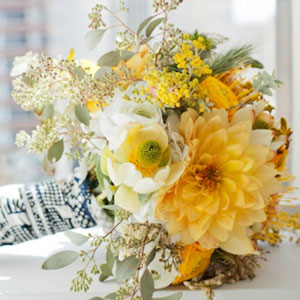 |
Quiet Summer Day |
| Quiet Summer Day is a lovely bouquet with fresh sprigs of eucalyptus offering the feeling of protection, according to the language of flowers, and acacia, which symbolizes friendship. This bouquet imbues a sense of calm and warmth with a dash of refreshing pine. We even love this bouquet's presence at a wedding in the hands of the bride on a quiet summer day. |
| Product Code: A0s9g |
| Price: $89.99 |
| Availability: In Stock |
| 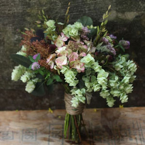 |
Verde |
| Verde is a contrasting bouquet with tart myrtle, sweet-pea and a vegetable complexion. This bouquet works well as a subtle complement to a country home, a subdued room, or in the lady of the house's boudoir. |
| Product Code: X1kg31 |
| Price: $79.99 |
| Availability: In Stock |
| 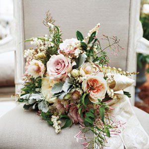 |
Classicana |
| Classicana is one our most popular standout bouquets: it is glamourous with lush layers of delicate florals and rich dark leaves, yet balanced. The rose petals are lightly brushed with gold glitter which adds a sophistication to the bouquet. This bouquet works well as a gift for special occasions--romantic or otherwise--and even as a main adornment to a soiree. |
| Product Code: BK201 |
| Price: $129.99 |
| Availability: In Stock |
| 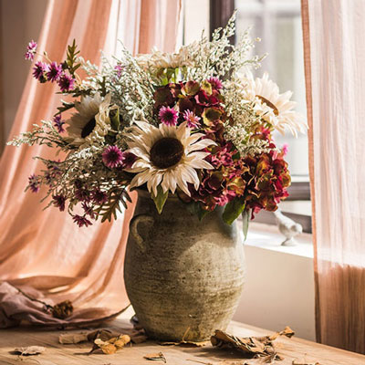 |
Country Roads |
| Country Road has rustic and understated details that make it a welcome addition to a drawing room setting, personal library or dinner table and is reminiscent to the bucolic country life. Lends a sense of calm and simplistically wholesome appeal to any occasion. |
| Product Code: Kl90ta |
| Price: $89.99 |
| Availability: In Stock |
| 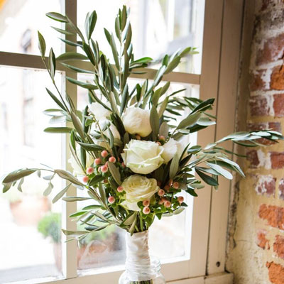 |
Peace |
| Peace has a key use of olive branches, which are unanimously known as a peace symbol. Peace gives off a simplistic sense of care for life and living. Peace can work well at summer parties or paired with Mediterranean decor. |
| Product Code: P0a0s8 |
| Price: $79.99 |
| Availability: In Stock |
| 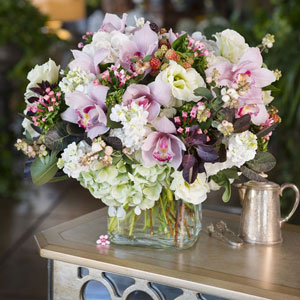 |
Hatfield Palace |
| Hatfield Palace has a wholesome mix of fruit and rich and light orchids. This bouquet can complement any domestic occasion, location, and event and looks lovely on a tea table. |
| Product Code: Is87ar |
| Price: $99.99 |
| Availability: In Stock |
| 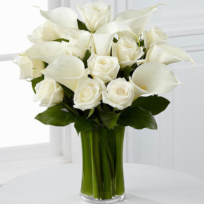 |
Sepulcher |
| Sepulcher is a conservative yet modern bouquet that has a reserved attitude for more formal settings while still conveying sincere emotions. The many white roses in the bouquet symbolize respect, innocence, purity and a hope for the future. Depending on the event, this bouquet might mourn the past at a funeral or even look forward to the future with a place at a wedding. |
| Product Code: M3so34 |
| Price: $69.99 |
| Availability: In Stock |
| 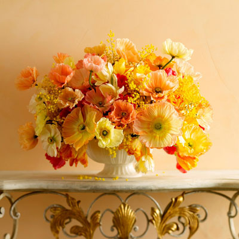 |
Versailles |
| Versailles has a warm, lively and dainty vivacious nature: the softly bright shades of the many poppies make the bouquet bright and young. Versailles is ready for a cheerful party or a celebration of the lighter things in life. This bouquet can bring light to any room--either the party room or empty living rooms. |
| Product Code: G29som |
| Price: $119.99 |
| Availability: In Stock |
| 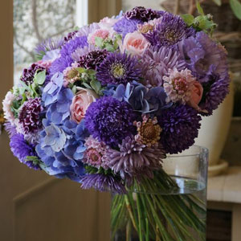 |
Sweet 16 |
| Sweet 16 is a fun bouquet that's having a good time. The two-tone color palette poses a nice contrast: the softer pinks are mixed into blue hydrangeas, which represent a boastful nature according to Victorian tradition, and deep purple chrysanthemums. Sweet 16 can be a great gift for those fun-loving folk or for anyone that wants to add some mirth and youthful mystery to a room. |
| Product Code: D63131 |
| Price: $99.99 |
| Availability: In Stock |
| 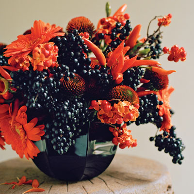 |
Hades and Persephone |
| Hades and Persephone symbolizes the complexity of the two gods according to Greek mythology. Hades, who fell in love with the maiden, Persephone, took her to his realm of the Underworld. The berries in the bouquet symbolize both the sweetness and darkness of Hades, the brother of Zeus, as well as Persephone. Hades and Persephone lends a sense of power and wondrous mystery to a room. |
| Product Code: PS610gt |
| Price: $99.99 |
| Availability: In Stock |
| 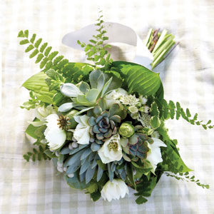 |
Galilee |
| Galilee is a fresh and airy bouquet, like the waters of its namesake. Galilee gives off a taste of the untampered natural world and can lighten a room or ones spirits. The ferns included in the bouquet exudes a fascination for the simplistic and more organic things of the world. |
| Product Code: Sp0278 |
| Price: $89.99 |
| Availability: In Stock |


© Floralology Artisan Florists. All Rights not Reserved. Jair 2016. MAT 125 Project3 Fictional Business.